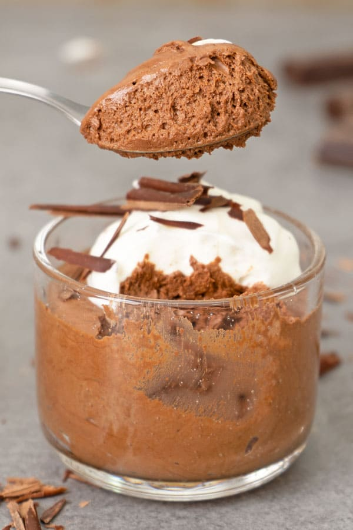

Receta de Lasagna

Descripcion
Esta deliciosa mousse de chocolate tiene un rico sabor a chocolate sin que sea demasiado abrumador. Yo diría que es simplemente perfecta.
Si miras el vídeo de abajo, puedes ver la textura aireada que siempre buscamos en una mousse perfecta.
Esta mousse también tiene esa textura suave y sedosa. Cada cucharada se siente como un pecado justificado. Sí.
Ingredientes
- 1 lata de Crema de Leche Nestlé
- 2 barras de Chocolate Nestlé Classic
- 3 claras de huevo
- 3 cucharadas de azúcar
Pasos a seguir
- En una cacerola al baño maría, calentar la Crema de Leche NESTLÉ.
- Agrega el Chocolate NESTLÉ CLASSIC y remueve hasta obtener una mezcla homogénea. Reserva.
- En una cacerola, combine las claras y el azúcar y coloque a fuego lento, revolviendo enérgicamente sin parar, durante unos 3 minutos, retirando la sartén del fuego unos momentos cada minuto, sin dejar de remover, para que no se cocine. Transfiera a una batidora de pie y bata durante 5 minutos o hasta que duplique su volumen. Mezclar ligeramente con la crema de chocolate.
- Verter en vasos y colocar en la nevera durante unas 3 horas. Decora con cerezas, crema batida o virutas de chocolate.
Return to main page